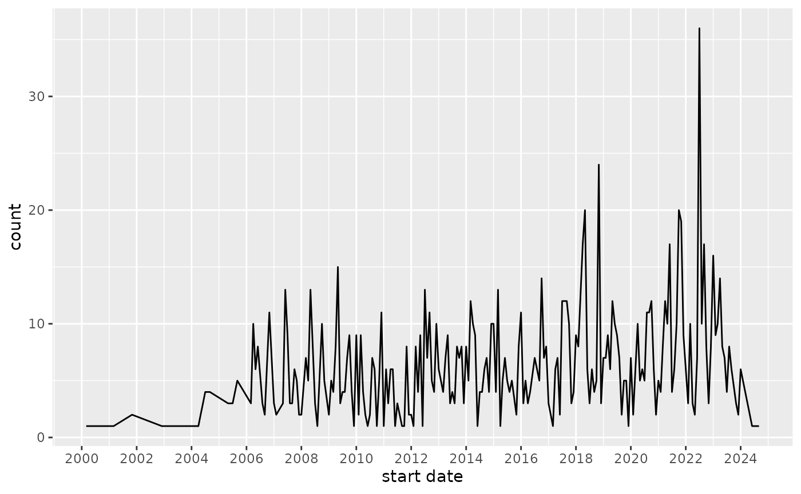
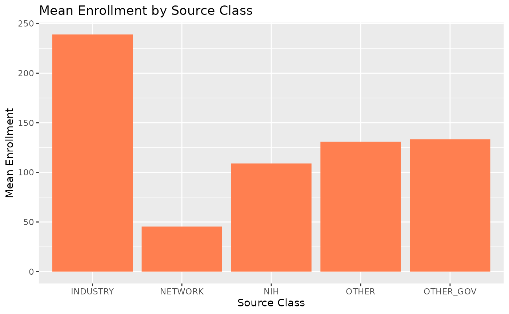
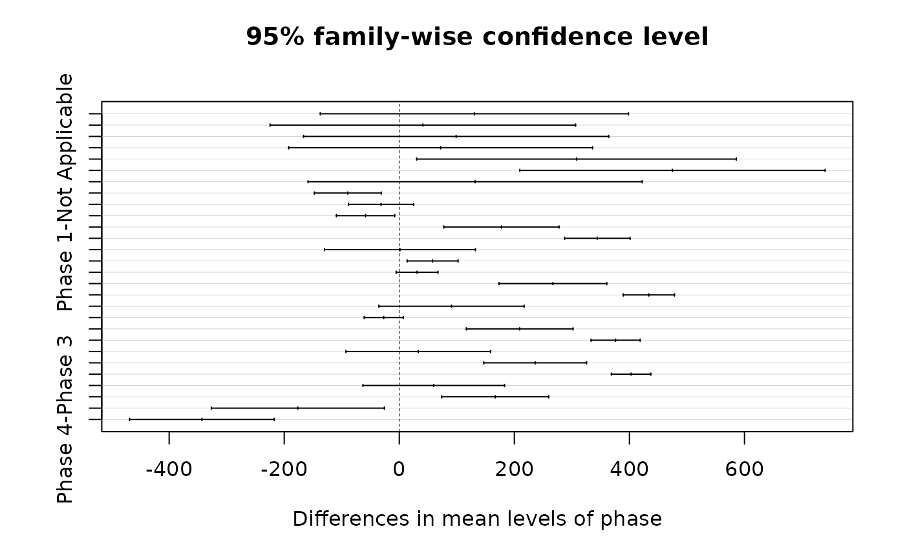

Project Abstract
Yining Chen, Yufei Deng, Ziqing Ji
2023-12-20
abstract.RmdBackground and Motivation
Colorectal cancer (CRC) is the third most common cancer type and the second leading cause of all cancer deaths, representing about 10% of all cancer diagnoses worldwide. In the United States, there are more than one million people living with CRC, and 4.2% percent of all adults are expected to be diagnosed with CRC at some point in their lives. CRC is also highly metastatic–more than 50% of the patients with CRC are expected to experience metastases during the course of their disease.
In recent decades, we have seen many advancements in the treatment of metastatic CRC (mCRC), including developments of traditional surgical and/or chemotherapy procedures (e.g. FOLFOX), new targeted therapies tailored for individual genetic and molecular profiles (e.g., Panitumumab, Aflibercept, etc.), as well as the emergence of new immunotherapeutic drugs (e.g., Pembrolizumab, Nivolumab, and Ipilimumab). Knowing the past trends in these clinical developments can provide valuable insights into the future directions of mCRC treatment.
Therefore, utilizing the openly accessible database from ClinicalTrials.gov, our project aims to explore and summarize some of the key underlying trends and characteristics in recent clinical trials on mCRC, including 1) the evolution of the distribution of intervention categories (e.g., drug, device, behavioral, etc.) over time, 2) the number of different therapeutic approaches being investigated over time, and 3) factors impacting trial completion and success (e.g., study type, phase, sponsorship, etc.). Addressing these questions will help obtain a clearer picture of the current landscape of clinical research on the condition of mCRC, potentially showing us future prospects toward expanded treatment options and enhanced precision medicines for mCRC.
Research Question
- Which factor(s) shows a significant influence on enrollment numbers in mCRC clinical trials?
- Prediction: How do the phase of the trial, enrollment numbers, and source class collectively influence the study duration of mCRC clinical trials?
- Classification: How can we predict the overall completion status using a set of factors, including enrollment, study duration, phase, intervention type, and source class?
Data Cleaning and Exploration
Datasets Used in Analysis
We first extract the nct_ids of clinical trials for
metastatic colorectal cancer from the clinicaltrials.gov database using
the dplyr filter query. Then, the nct_ids are used to join
datasets with study information and intervention types and descriptions.
This allows us to derive the two datasets that we will use for the
analyses:
-
The
crcdata table contains information about individual mCRC clinical trials, with each entry representing one trial. There are 717 entries and 12 variables. Variables include study id, title, start date, completion date, phase, etc.library(bis620.final) crc |> head(5) #> # A tibble: 5 × 12 #> nct_id condition_name start_date completion_date study_type brief_title #> <chr> <chr> <date> <date> <chr> <chr> #> 1 NCT01531595 Metastatic Colo… 2012-02-29 2025-12-31 Intervent… Study of B… #> 2 NCT01531621 Metastatic Colo… 2012-02-29 2025-12-31 Observati… A Populati… #> 3 NCT01532804 Metastatic Colo… 2011-07-28 2019-01-31 Intervent… 2nd-line T… #> 4 NCT01533740 Metastatic Colo… 2012-03-31 2014-02-28 Observati… Circulatin… #> 5 NCT01539824 Metastatic Colo… 2012-02-29 2014-08-31 Intervent… A Study of… #> # ℹ 6 more variables: official_title <chr>, overall_status <chr>, phase <chr>, #> # enrollment <dbl>, why_stopped <chr>, source_class <chr> -
The
crc_subdata table merged additional information about intervention groups (arms) to thecrcdata table, with one clinical trial potentially having multiple groups. There are 1,697 entries and 16 variables.crc_sub |> head(5) #> # A tibble: 5 × 16 #> nct_id condition_name intervention_id intervention_type intervention_name #> <chr> <chr> <dbl> <chr> <chr> #> 1 NCT01531595 Metastatic Co… 60057945 Drug Bevacizumab plus… #> 2 NCT01531621 Metastatic Co… 60057946 Other Biomarker sampli… #> 3 NCT01532804 Metastatic Co… 60058040 Drug bevacizumab, oxa… #> 4 NCT01532804 Metastatic Co… 60058041 Drug Bevacizumab, oxa… #> 5 NCT01533740 Metastatic Co… 60058119 Drug fluorouracil/iri… #> # ℹ 11 more variables: description <chr>, start_date <date>, #> # completion_date <date>, study_type <chr>, brief_title <chr>, #> # official_title <chr>, overall_status <chr>, phase <chr>, enrollment <dbl>, #> # why_stopped <chr>, source_class <chr>
Data Visualization
Eplorative Data Analysis
To understand the underlying characteristics of mCRC clinical trials, we drew attention to the distribution of interventional and observational study designs, specifically stratified by the types of intervention and study phases. The table below shows that there is a clear dominance of interventional (or experimental) over observational studies, as well as a prominence of interventions involving drugs over any other forms. This is not surprising as drugs encompass a wide range of therapeutic approaches such as protein binding pathway-targeted drugs, immune checkpoint targeted drugs, and chemotherapy drugs, which are all prodominant treatment options. Finally, we see that most clinical trials (interventional studies) are phase 2 studies, which is defined as “conducted to evaluate the effectiveness of the drug for a particular indication or indications … and to determine the common short-term side effects and risks”.
| Characteristic | Interventional, N = 1,5951 | Observational, N = 1001 |
|---|---|---|
| intervention_type | ||
| Biological | 118 (7.4%) | 0 (0%) |
| Combination Product | 10 (0.6%) | 0 (0%) |
| Device | 28 (1.8%) | 1 (1.0%) |
| Diagnostic Test | 6 (0.4%) | 13 (13%) |
| Drug | 1,314 (82%) | 42 (42%) |
| Genetic | 14 (0.9%) | 0 (0%) |
| Other | 54 (3.4%) | 26 (26%) |
| Procedure | 29 (1.8%) | 18 (18%) |
| Radiation | 22 (1.4%) | 0 (0%) |
| phase | ||
| Early Phase 1 | 3 (0.2%) | 0 (NA%) |
| Not Applicable | 88 (5.5%) | 0 (NA%) |
| Phase 1 | 196 (12%) | 0 (NA%) |
| Phase 1/Phase 2 | 232 (15%) | 0 (NA%) |
| Phase 2 | 809 (51%) | 0 (NA%) |
| Phase 2/Phase 3 | 27 (1.7%) | 0 (NA%) |
| Phase 3 | 226 (14%) | 0 (NA%) |
| Phase 4 | 14 (0.9%) | 0 (NA%) |
| Unknown | 0 | 100 |
| 1 n (%) | ||
Showing below is the Sankey diagram demonstrating the same information as in the above table. Yet we included the graph to show more straightforwardly the proportionality of the distributions.
library(dplyr)
#>
#> Attaching package: 'dplyr'
#> The following objects are masked from 'package:stats':
#>
#> filter, lag
#> The following objects are masked from 'package:base':
#>
#> intersect, setdiff, setequal, union
library(ggalluvial)
#> Loading required package: ggplot2
plot_crc_sankey(c('2000-01-01','2024-12-31'))Visualization: Evolution Over Time
A key question to the data is the evolving trend of clinical trials over time. We therefore wanted to visualize the changes of total number of mCRC clinical trials from the 2000s to the 2020s. Below shows the total number of each type of the interventions across time, from which we can see that 1) there is a clear increase in the overall total number of trials and 2) the proportions of other types of interventions than drugs seem to also increase over time.
To investigate whether the second observation is actually true, we generate another plot showing the proportions of different intervention types (as shown below). We may see that there is a slight increase in the proportion of biological interventions over time, while the other types (procedure, radiation, etc.) remain generally unchanged. This might suggest that, being the traditional, gold-standard treatment, radiological and surgical procedures are not actively research in clinical trials; In contrast, new drugs representing various therapeutic approaches are constantly being investigated in clinical studies.
Lastly, to make specific inquiries into the temporal trends of the clinical trials, we wrote a function that allows querying the data in respect to specific therapies, intervention types, or any given keywords and plotting the time trend accordingly. Bellow is an example of one of the graphs showing the number of clinical trials with intervention type “drug” over time.
plot_query_time_trend("drug", quo(intervention_type))
Analysis
Anova
We conducted statistical examinations to assess the variation in enrollment numbers across 3 different factors: phase of the trial, the duration of the study, and the source class.
1. Enrollment ~ Phase
ANOVA to identify significant differences in enrollment among trial phases, followed by Tukey’s Honest Significant Difference (HSD) test to conduct pairwise comparisons between trial phases to identify where the differences lay. Data is visualized using box plots, highlighting enrollment distribution across phases. Outliers are indicated by red asterisks, representing enrollments that are notably higher or lower than the typical range for their respective phases.
#> Df Sum Sq Mean Sq F value Pr(>F)
#> source_class 4 5313780 1328445 23.5 <2e-16 ***
#> Residuals 1692 95664266 56539
#> ---
#> Signif. codes: 0 '***' 0.001 '**' 0.01 '*' 0.05 '.' 0.1 ' ' 1
#>
#> Kruskal-Wallis rank sum test
#>
#> data: enrollment by source_class
#> Kruskal-Wallis chi-squared = 103.3, df = 4, p-value < 2.2e-16
2. Enrollment ~ Source Class
We performed the ANOVA and the Kruskal-Wallis test to determine if there were significant differences in enrollment among various source classes. To visualize enrollment distributions, we created a histogram which provided an overview of enrollment frequencies, and a bar plot that depicted mean enrollment counts by source class.
enrollment_phase_analysis()
#> Df Sum Sq Mean Sq F value Pr(>F)
#> phase 7 32213310 4601901 203.4 <2e-16 ***
#> Residuals 1589 35944031 22621
#> ---
#> Signif. codes: 0 '***' 0.001 '**' 0.01 '*' 0.05 '.' 0.1 ' ' 1
3. Enrollment ~ Study Duration
Using ANOVA, we assessed the impact of study duration on enrollment numbers. Additionally, we visualized this relationship through a scatter plot created with ggplot2, which highlighted enrollment trends over the duration of the studies. The data were filtered to include only trials with complete enrollment and duration information, ensuring accuracy and relevance in our analysis.
enrollment_duration_analysis()
#> Df Sum Sq Mean Sq F value Pr(>F)
#> study_time 1 5943390 5943390 110.1 <2e-16 ***
#> Residuals 1674 90388794 53996
#> ---
#> Signif. codes: 0 '***' 0.001 '**' 0.01 '*' 0.05 '.' 0.1 ' ' 1Regression Analysis:
A regression analysis was performed to fit and predict study duration using several factors including enrollment, source class, and phase.Key steps included filtering data for completeness, transforming dates, and calculating study duration. A linear regression model was fitted, with outlier removal guided by Cook’s distance with a threshold of 4/n. The refined model’s results were evaluated through diagnostic plots and a comparison of Actual vs. Predicted study durations plot.
Overall Status Classification
In the classification task, we used a set of variables, including duration, enrollment, intervention_type, source_class, and phase to predict the overall status of a clinical trial through a logistic regression model. Multiple combinations of variables were experimented to optimize model performance. The target variable overall_status was converted into a binary variable for this classification task. Specifically, values of “Recruiting”, “Completed”, “Active, not recruiting”, and “Not yet recruiting” are defined as class 1, and values of “Terminated”, “Withdrawn”, and “Suspended” are defined as class 0. Those with values “Unknown status” are deleted and not included in the classification task. In terms of determining the optimal probability threshold for converting probabilities to classes in prediction, we used the pROC package that helps determine the optimal threshold.
status_classification()
#> Setting levels: control = 0, case = 1
#> Setting direction: controls < cases
#>
#> pred_results 0 1
#> 0 63 66
#> 1 16 287
#> [1] "Accuracy of Logistic Regression Model: 0.810185185185185"Interpretation and Conclusions
To determine the significant factors influencing enrollment numbers in mCRC clinical trials, ANOVA tests were conducted. All three ANOVA summary tables indicate highly significant differences in enrollment numbers across the different phases of clinical trials, source classes, and study duration, as evidenced by a very low p-value (<0.05). The Tukey’s HSD plot presents confidence intervals for pairwise differences between phases. The plot shows several intervals (phase 3, phase 4, etc.) that do not include zero, indicating significant differences in mean enrollment between certain phases. The Kruskal-Wallis rank sum test result indicates a highly significant difference in enrollment numbers across various source classes of clinical trials (with chi-squared = 103.3). This suggests that the source class is likely an influential factor affecting enrollment in these trials.
To predict the collective influence of different factors on the study duration of mCRC clinical trials, a multivariate linear regression model was developed. The regression output and diagnostic plots provide insight into the relationship between study duration and the predictors. The output shows that enrollment, NIH (as a source class), and the trial phase have significant effects on study duration. For instance, being funded by the NIH is associated with an increase in study duration, as indicated by a large positive coefficient that is statistically significant. The diagnostic plots suggest that the residuals are reasonably well-behaved, with no obvious patterns in the Residuals vs Fitted plot. The Scale-Location plot indicates that the variance of residuals is relatively constant across the range of fitted values. Though the Residuals vs Leverage plot identifies a few potential outliers, they are acceptable as the Cook’s distance for all points is below the common threshold. The scatter plot of Predicted vs Actual values shows how well the model’s predictions match the actual data, with points color-coded by source class. Points falling along the dashed line represent accurate predictions. The dispersion of points around this line reflects the variability in prediction accuracy, potentially due to unaccounted factors affecting study duration. We observed that the points cluster (or stratified) by source class, revealing that NIH-sourced trials generally exhibit shorter study durations, suggesting source-specific influences on trial length.
In order to classify the overall completion status using different factors, we built a binary logistic regression model with 81.0% accuracy. This high level of accuracy is evidenced by the confusion matrix. The model correctly predicted 63 trials as not meeting the success criteria (true negatives) and 287 as meeting them (true positives), while misclassifying only 16 as false negatives and 66 as false positives. The confusion matrix plot visually confirms the model’s effectiveness, with a clear distinction between successful and unsuccessful trial classifications.
Discussion
Potential future directions of the study include carrying out time series analyses on how the distribution of study phases change over time, and how other factors such as enrollment number, treatment approach, and sponsorship come into play. Moreover, to take a step further, we may conduct meta-analyses on treatment efficacies if outcome data are available. For example, we can perform survival analyses (e.g., Kaplan-Meier curves, log-rank tests) to compare the effectiveness of different therapeutic drugs.
We also noticed that a large proportion of the studies were terminated or suspended. While information availabe in the database could not tell us the exact reasons for termination, it might be important to investigate factors correlated with trial success such as trial phase, targeted therapy types, etc.